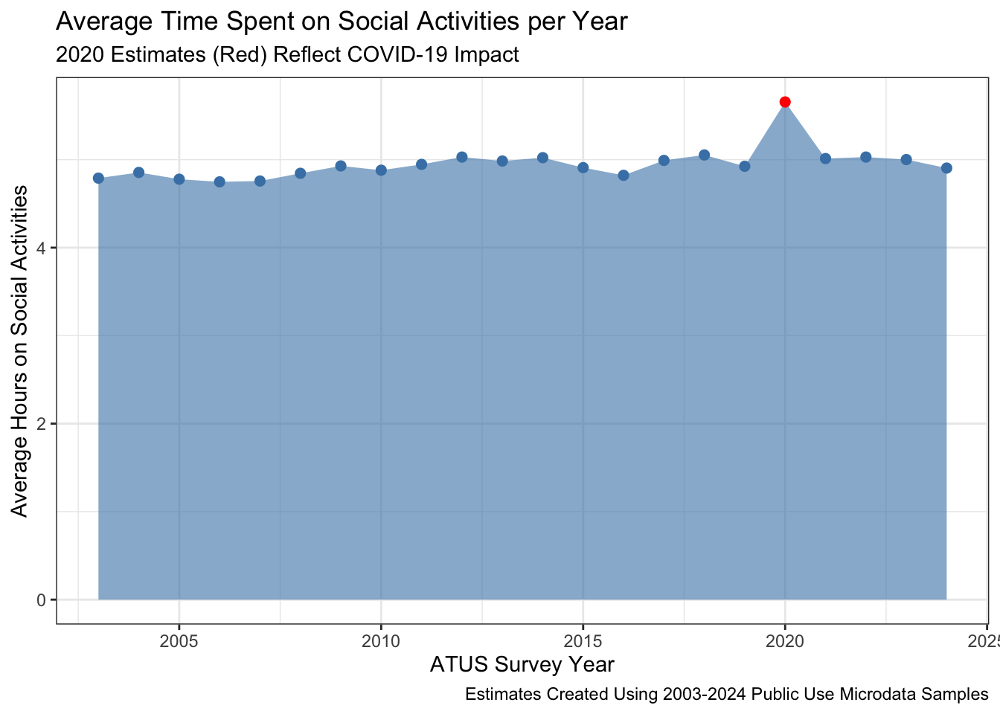
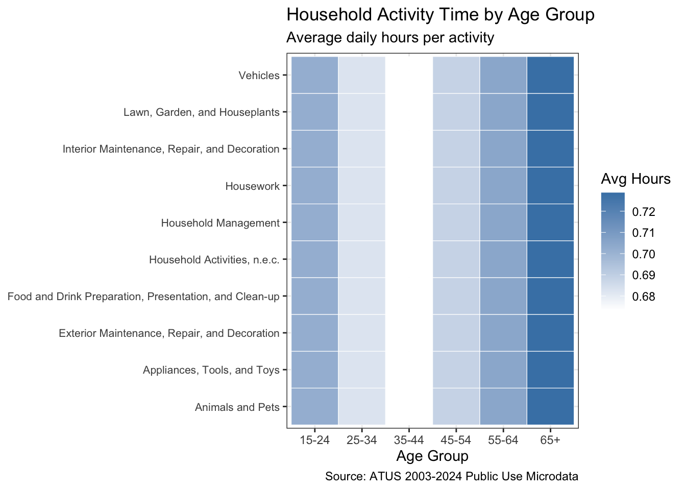
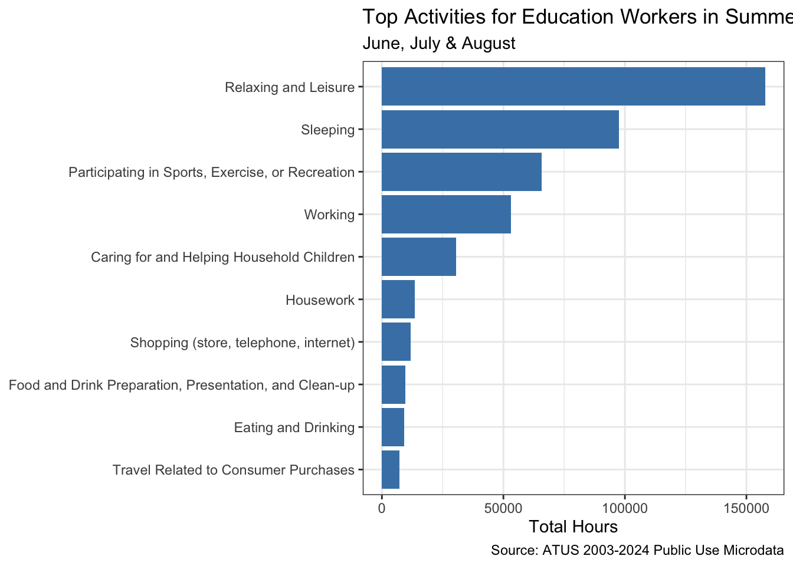
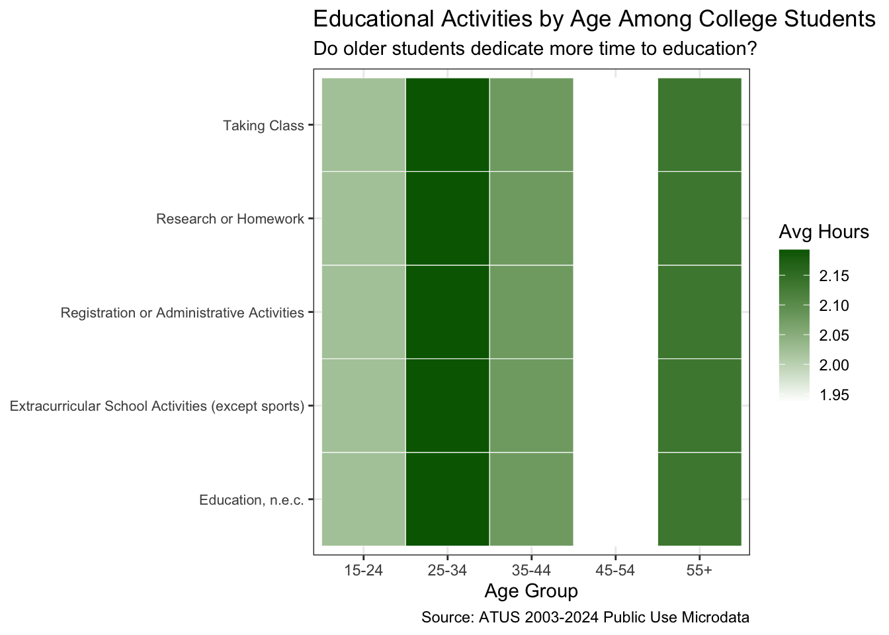
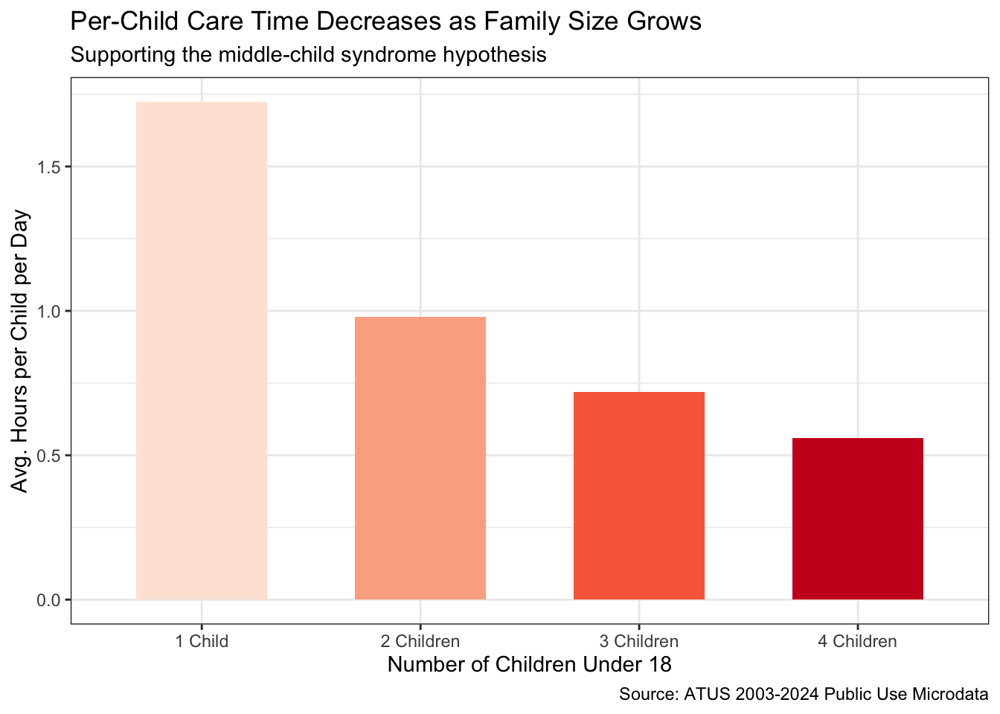
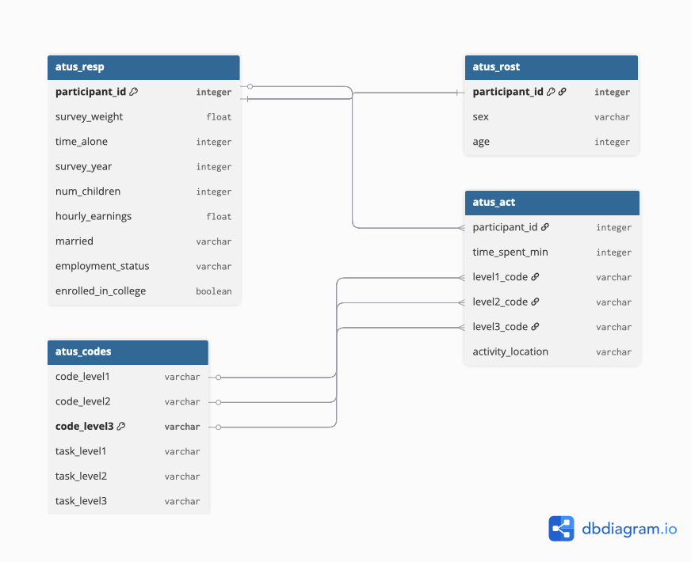

In this mini-project, I explore data from the American Time Use Survey (ATUS), a joint effort of the US Bureau of Labor Statistics and the US Census Bureau. The ATUS tracks how Americans spend their time across a wide range of daily activities. Using public-use microdata from 2003 to 2024, I investigate patterns in time use across different demographics, including stay-at-home dads, college undergraduates, and working professionals.
This analysis practices key data skills including joining multiple data sources with dplyr, creating publication-quality tables with gt, and building informative visualizations with ggplot2.
Data Acquisition
In this section, I download the ATUS data files from the US Bureau of Labor Statistics website using the instructor-provided functions below.
The four tables in this analysis are connected through shared key columns. The participant_id column links atus_resp, atus_rost, and atus_act together — each respondent has a unique ID that appears across all three files. The activity codes in atus_act (level2_code, level3_code) correspond to code_level2 and code_level3 in atus_codes, allowing us to translate numeric codes into readable activity names like “Sleeping” or “Watching TV”. When joining these tables, we use inner_join when we only want rows that exist in both tables, and left_join when we want to keep all rows from the left table regardless of whether a match exists in the right table.
Task 3: Adding Additional Demographic Variables
In this section, I modify the load_atus_data function to include five additional demographic variables: number of children in the home, marital status, employment status, activity location, and college enrollment status. Note that age (TEAGE) is stored in the roster file, not the respondent file. The case_match function is used to recode numeric codes into readable values, and Boolean operators (&) are used to combine variables for college enrollment.
When working with microdata, raw averages from survey respondents rarely reflect true population averages. Because survey respondent distributions rarely match the actual population distributions, weighted averages are used to adjust the sample to match the demographics of the population. The Census Bureau provides pre-computed weights represented by the survey_weight variable in our data.
As an example, we can examine how much time the average American spent on social activities each year using these weights:
Code
social_codes <- atus_codes |>filter(task_level1 =="Socializing, Relaxing, and Leisure") |>select(code_level1) |>distinct()atus_act |>filter(level1_code %in% social_codes$code_level1) |>group_by(participant_id) |>summarize(total_social_min =sum(time_spent_min, na.rm =TRUE)) |>inner_join(atus_resp, join_by(participant_id)) |>group_by(survey_year) |>summarize(avg_social_hrs =weighted.mean(total_social_min /60, survey_weight)) |>ggplot(aes(x = survey_year, y = avg_social_hrs)) +theme_bw() +geom_area(fill ="steelblue", alpha =0.6) +geom_point(aes(color =if_else(survey_year ==2020, "red", "steelblue")),size =2) +scale_color_identity() +xlab("ATUS Survey Year") +ylab("Average Hours on Social Activities") +ggtitle("Average Time Spent on Social Activities per Year","2020 Estimates (Red) Reflect COVID-19 Impact") +labs(caption ="Estimates Created Using 2003-2024 Public Use Microdata Samples")

There is a notable dip in social activity time in 2020, likely driven by COVID-19 lockdowns which dramatically changed how Americans spent their time. Post-2020 levels reflect a gradual return to pre-pandemic patterns.
Exploratory Analysis
Task 4: Exploratory Questions - Inline Values
Since 2003, a total of 252,808 different respondents have participated in the ATUS survey.
The ATUS tracks 32 different sports that Americans watch as a Level 3 activity.
Approximately 32.2% of Americans are retired.
On average, Americans sleep 8.8 hours per night.
Among Americans with one or more children in the home, the average time spent on child care activities — including healthcare and involvement in their children’s education — is 1.9 hours per day.
Task 5: Exploratory Questions - Table Answers
Table 1: Lawn Care Time — Retired vs Full-Time Employed
Code
library(gt)lawn_codes <- atus_codes |>filter(str_detect(task_level2, "Lawn")) |>select(code_level2) |>distinct()atus_act |>filter(level2_code %in% lawn_codes$code_level2) |>group_by(participant_id) |>summarize(total_lawn_min =sum(time_spent_min, na.rm =TRUE)) |>inner_join(atus_resp, join_by(participant_id)) |>filter(employment_status %in%c("Retired", "Employed Full Time")) |>group_by(employment_status) |>summarize(avg_hrs =round(weighted.mean(total_lawn_min /60, survey_weight), 2)) |>gt() |>cols_label(employment_status ="Employment Status",avg_hrs ="Avg. Hours per Day") |>tab_header(title ="Lawn Care Time by Employment Status",subtitle ="Retired vs Full-Time Employed Americans") |>fmt_number(columns = avg_hrs, decimals =2) |>tab_source_note("Source: ATUS 2003-2024 Public Use Microdata")
Lawn Care Time by Employment Status
Retired vs Full-Time Employed Americans
Employment Status
Avg. Hours per Day
Employed Full Time
1.93
Retired
2.01
Source: ATUS 2003-2024 Public Use Microdata
Table 2: Social & Recreational Time by Marital Status
Code
social_codes2 <- atus_codes |>filter(task_level1 =="Socializing, Relaxing, and Leisure") |>select(code_level1) |>distinct()atus_act |>filter(level1_code %in% social_codes2$code_level1) |>group_by(participant_id) |>summarize(total_social_min =sum(time_spent_min, na.rm =TRUE)) |>inner_join(atus_resp, join_by(participant_id)) |>filter(!is.na(married)) |>group_by(married) |>summarize(avg_hrs =round(weighted.mean(total_social_min /60, survey_weight), 2)) |>gt() |>cols_label(married ="Marital Status",avg_hrs ="Avg. Hours per Day") |>tab_header(title ="Social & Recreational Time by Marital Status",subtitle ="Married vs Unmarried Americans") |>fmt_number(columns = avg_hrs, decimals =2) |>tab_source_note("Source: ATUS 2003-2024 Public Use Microdata")
Social & Recreational Time by Marital Status
Married vs Unmarried Americans
Marital Status
Avg. Hours per Day
Married
4.59
Not Married
5.35
Unmarried Partner
4.59
Source: ATUS 2003-2024 Public Use Microdata
Table 3: Where High-Earning Americans Spend Their Time
Code
high_earners <- atus_resp |>filter(employment_status =="Employed Full Time", hourly_earnings >0) |>filter(hourly_earnings >=quantile(hourly_earnings, 0.75,na.rm =TRUE)) |>select(participant_id, survey_weight)atus_act |>inner_join(high_earners, join_by(participant_id)) |>filter(!is.na(activity_location)) |>group_by(activity_location) |>summarize(avg_hrs =round(weighted.mean(time_spent_min /60, survey_weight), 2)) |>arrange(desc(avg_hrs)) |>head(8) |>gt() |>cols_label(activity_location ="Location",avg_hrs ="Avg. Hours per Day") |>tab_header(title ="Where High-Earning Americans Spend Their Time",subtitle ="Top 25% Earners Among Full-Time Employed") |>fmt_number(columns = avg_hrs, decimals =2) |>tab_source_note("Source: ATUS 2003-2024 Public Use Microdata")
Where High-Earning Americans Spend Their Time
Top 25% Earners Among Full-Time Employed
Location
Avg. Hours per Day
Workplace
2.32
Place of Worship
1.26
Someone Else's Home
1.16
Other Place
1.03
Home
0.91
Outdoors
0.89
Library
0.81
Restaurant or Bar
0.75
Source: ATUS 2003-2024 Public Use Microdata
Table 4: Most Common Activities on Public Transit
Code
atus_act |>filter(activity_location =="Vehicle") |>inner_join(atus_codes, join_by(level3_code == code_level3)) |>group_by(task_level3) |>summarize(total_hrs =round(sum(time_spent_min,na.rm =TRUE) /60, 1)) |>arrange(desc(total_hrs)) |>head(8) |>gt() |>cols_label(task_level3 ="Activity",total_hrs ="Total Hours Reported") |>tab_header(title ="Most Common Activities on Public Transit",subtitle ="Bus, Train, Subway, Boat, or Ferry") |>fmt_number(columns = total_hrs, decimals =1) |>tab_source_note("Source: ATUS 2003-2024 Public Use Microdata")
Most Common Activities on Public Transit
Bus, Train, Subway, Boat, or Ferry
Activity
Total Hours Reported
Walking
2,379.8
Picking up or dropping off household children
436.5
Picking up or dropping off non-household adult
263.1
Waiting for or with household children
185.1
Waiting associated with helping household adults
117.4
Dropping off or picking up non-household children
110.2
Picking up or dropping off household adult
109.7
Waiting associated with helping non-household adults
95.2
Source: ATUS 2003-2024 Public Use Microdata
Table 5: Time Spent on Favorite Activities by Age Group
My four favorite activities are Cooking, Shopping, Exercise, and Reading.
Security Procedures Related to Sports, Exercise, and Recreation
Sports, Exercise, and Recreation, n.e.c.
Travel Related to Consumer Purchases
Travel Related to Sports, Exercise, and Recreation
Waiting Associated with Sports, Exercise, and Recreation
Security Procedures Related to Consumer Purchases
15-24
2.36
0.07
1.34
0.08
1.05
0.26
0.28
0.66
NA
25-34
2.58
1.86
1.16
0.51
0.69
0.26
0.29
0.41
0.75
35-44
2.33
0.14
1.24
0.08
1.50
0.25
0.29
0.51
0.08
45-54
2.50
NA
1.21
0.02
1.09
0.26
0.29
0.63
0.21
55-64
2.44
0.08
1.13
0.17
0.62
0.27
0.31
0.68
NA
65+
2.50
0.92
1.03
0.08
0.76
0.26
0.29
0.51
0.05
Source: ATUS 2003-2024 Public Use Microdata
Task 6: Exploratory Questions - Graph Answers
Graph 1: Household Activities by Age Group
Code
household_codes <- atus_codes |>filter(task_level1 =="Household Activities") |>select(code_level1, task_level2) |>distinct()atus_act |>filter(level1_code %in% household_codes$code_level1) |>inner_join(household_codes, join_by(level1_code == code_level1)) |>inner_join(atus_rost |>select(participant_id, age),join_by(participant_id)) |>inner_join(atus_resp, join_by(participant_id)) |>mutate(age_group =cut(age,breaks =c(14, 24, 34, 44, 54, 64, 85),labels =c("15-24", "25-34", "35-44","45-54", "55-64", "65+"))) |>filter(!is.na(age_group)) |>group_by(age_group, task_level2) |>summarize(avg_hrs =weighted.mean(time_spent_min /60, survey_weight),.groups ="drop") |>ggplot(aes(x = age_group, y = task_level2, fill = avg_hrs)) +geom_tile(color ="white") +scale_fill_gradient(low ="white", high ="steelblue",name ="Avg Hours") +theme_bw() +labs(title ="Household Activity Time by Age Group",subtitle ="Average daily hours per activity",x ="Age Group", y =NULL,caption ="Source: ATUS 2003-2024 Public Use Microdata") +theme(axis.text.y =element_text(size =8))

Household activity time increases significantly with age. Older Americans spend considerably more time on interior cleaning and food preparation, while younger age groups spend less time overall on household tasks.
Graph 2: Summer Activities for Education Workers
Code
atus_resp_raw <-read_csv("data/mp02/atusresp_0324.dat",show_col_types =FALSE)edu_ids <- atus_resp_raw |>filter(TUMONTH %in%c(6, 7, 8), TEIO1ICD %in%7860:7890) |>select(participant_id = TUCASEID)atus_act |>inner_join(edu_ids, join_by(participant_id)) |>inner_join(atus_codes, join_by(level2_code == code_level2)) |>group_by(task_level2) |>summarize(total_hrs =sum(time_spent_min, na.rm =TRUE) /60) |>arrange(desc(total_hrs)) |>head(10) |>ggplot(aes(x =reorder(task_level2, total_hrs),y = total_hrs)) +geom_col(fill ="steelblue") +coord_flip() +theme_bw() +labs(title ="Top Activities for Education Workers in Summer",subtitle ="June, July & August",x =NULL, y ="Total Hours",caption ="Source: ATUS 2003-2024 Public Use Microdata")

Education workers spend most of their summer time on sleep and leisure activities. Work still appears in the top results indicating not all education workers fully disconnect during summer months.
Graph 3: Educational Time by Age Among College Students
Code
edu_codes <- atus_codes |>filter(task_level1 =="Education") |>select(code_level1, task_level2) |>distinct()atus_act |>filter(level1_code %in% edu_codes$code_level1) |>inner_join(edu_codes, join_by(level1_code == code_level1)) |>inner_join(atus_rost |>select(participant_id, age),join_by(participant_id)) |>inner_join(atus_resp |>filter(enrolled_in_college ==TRUE),join_by(participant_id)) |>mutate(age_group =cut(age,breaks =c(14, 24, 34, 44, 54, 85),labels =c("15-24", "25-34", "35-44","45-54", "55+"))) |>filter(!is.na(age_group)) |>group_by(age_group, task_level2) |>summarize(avg_hrs =weighted.mean(time_spent_min /60, survey_weight),.groups ="drop") |>ggplot(aes(x = age_group, y = task_level2, fill = avg_hrs)) +geom_tile(color ="white") +scale_fill_gradient(low ="white", high ="darkgreen",name ="Avg Hours") +theme_bw() +labs(title ="Educational Activities by Age Among College Students",subtitle ="Do older students dedicate more time to education?",x ="Age Group", y =NULL,caption ="Source: ATUS 2003-2024 Public Use Microdata") +theme(axis.text.y =element_text(size =8))

Older college students tend to spend more time on educational activities than younger students, supporting the idea that education is valued more with age and life experience.
Sports preferences vary across age groups. Younger Americans watch more basketball and soccer while older Americans favor golf and baseball, reflecting generational differences in sports culture.
Graph 5: Per-Child Care Time by Family Size
Code
childcare_codes2 <- atus_codes |>filter(task_level1 =="Caring for and Helping Household Members") |>select(code_level1) |>distinct()atus_act |>filter(level1_code %in% childcare_codes2$code_level1) |>group_by(participant_id) |>summarize(total_childcare_min =sum(time_spent_min, na.rm =TRUE),.groups ="drop") |>inner_join(atus_resp, join_by(participant_id)) |>filter(!is.na(num_children), num_children >=1, num_children <=4) |>mutate(per_child_hrs = (total_childcare_min /60) / num_children,family_size =factor(num_children,levels =c(1, 2, 3, 4),labels =c("1 Child", "2 Children","3 Children", "4 Children"))) |>group_by(family_size) |>summarize(avg_per_child =weighted.mean(per_child_hrs, survey_weight,na.rm =TRUE),.groups ="drop") |>ggplot(aes(x = family_size, y = avg_per_child,fill = family_size)) +geom_col(show.legend =FALSE, width =0.6) +scale_fill_brewer(palette ="Reds") +theme_bw() +labs(title ="Per-Child Care Time Decreases as Family Size Grows",subtitle ="Supporting the middle-child syndrome hypothesis",x ="Number of Children Under 18",y ="Avg. Hours per Child per Day",caption ="Source: ATUS 2003-2024 Public Use Microdata")

As family size increases, the time parents spend per child decreases significantly. Only children receive the most parental attention, while children in larger families receive progressively less time — providing quantitative support for the middle-child syndrome hypothesis.
Final Insights and Deliverable
Market Research on Time Use Patterns in Target Demographics
You are the product manager for a new time-tracking app that helps users compare their time use against demographically similar peers. The following profiles define typical time use for three target demographics.
The diagram below shows the four ATUS tables, their key columns, and how they connect to each other.

The four tables are linked through two key relationships. The participant_id column connects atus_resp, atus_rost, and atus_act together — each respondent has a unique ID that appears across all three files. The level2_code and level3_code in atus_act join to code_level2 and code_level3 in atus_codes to translate numeric codes into readable activity labels. Because each respondent has multiple activity records, the relationship between atus_act and atus_resp is many-to-one. Note that joins can be performed at three levels of precision — Level 1, Level 2, or Level 3 depending on the granularity of analysis required.
Conclusion
This analysis of ATUS microdata from 2003 to 2024 reveals clear patterns in how Americans allocate their time across activities and demographic groups. Household responsibilities increase with age, parental attention per child declines as family size grows, and college-enrolled respondents dedicate significantly more time to education than non-enrolled individuals. These findings provide a strong foundation for designing a time-tracking app that helps users benchmark their habits against demographically similar peers.
NoteAI Usage Statement
No generative AI tools were used to write or edit any narrative or analytical text in this report.